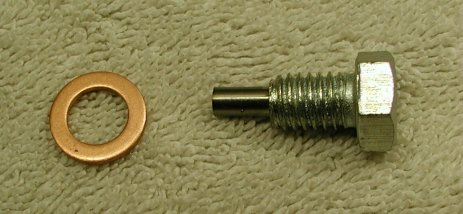

Fixing stripped drain plug on 72 to 75 crank cases
by Fred Eaton
Summary :
This article covers how to fix a stripped drain plug hole on the 1972 through 1975 crank cases. This is the 3/8 x 16 drain plug.
We will be using a mill to fix the crank case, but a drill press will work as well.
All parts mentioned in this article, that Old Britts sells, will be priced out at the end.

The 3/8 x 16 drain plug with a magnet on the end and its copper sealing washer.
Procedure :
- The first step is to secure the crank cases so that the stripped threads can be drilled out and in the following steps you can find the exact center of the drain hole.
The drain hole is perpendicular to the surface of the top of the crank cases, allowing for easy securing of the cases so a straight hole can be drilled.
The secured cases with the 25/64 drill.
-
Mount a 25/64 drill and drill out the stripped threads. On a mill with a DRO, make note of the center of the drain hole so that you can locate the
hole center for the future steps. For a drill press, secure the cases and lock the table when you find the hole center.
-
Tap the drain hole using the tap supplies with the Heli Coil kit. We use a spring loaded tap centering tool to guarantee a perpendicular tapped hole and manually tap the hole.
For a drill press, you could mount the tap in the chuck and manually turn the chuck to start the tap to obtain a perpendicular tapped hole.
Tapping the drain hole.
-
Our next step is the surface the area around the drain hole, so that a good sealing surface is obtained.
We use a 3/4" four flute end mill to do this job and by not changing the mill head or the cases, we are guaranteed a true surface perpendicular to the bolt.
For a drill press, If your surface around the drain hole is acceptable or you do not have access to a 3/4" end mill, you may want to skip this step.
Facing the surface.
-
The last step is to insert the Heli Coil and break off the coil tab.
The finished refurbished drain hole.
-
If all went well, the new drain plus should screw into the drain hole by hand without any resistance.
Drain plug and sealing washer threaded into our refurbished drain hole.
Prices for items used in the above procedure. Prices are current as of
02/12/21.
- (part # 06-4188) - Plug, Magnetic, Sump Drain, 3/8 x 16,
DROPPED.
- (part # 06-2624) - Sealing washer,
$0.30.
- (part # 52-800051) - Heli Coil Kit, 3/8 x 16, Tap & Tool, 12 Inserts,
$95.83.
- (part # 52-800059) - 25/64" Drill for 3/8" Coil Kits
$23.11.
- We charge
$40.00
to fix your stripped drain plug. Call first for instructions on preparing the crank cases for us to perform the work.
Return to Old Britts home page
…… Return to Technical Articles`
This page was written and designed by F. H. Eaton
& Associates if you have any questions or comments please
contact us at info@fheaton.com